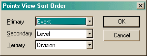

The Points View Sort Order dialog allows you determine how events should be ordered in the Points view.

The three comboboxes allow you to specify how the events in the Points view should ordered. Version 1.7.3.12 and earlier had a fixed order of Division/Level/Event. The image above shows the new default settings. This order is stored in the system registry as part of your user preferences.